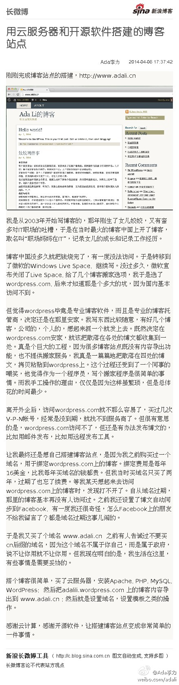
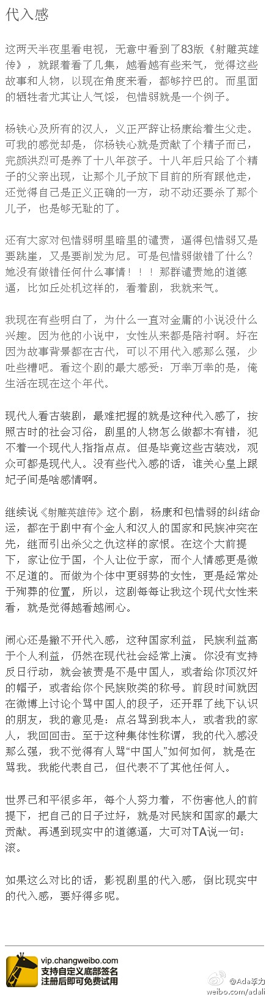
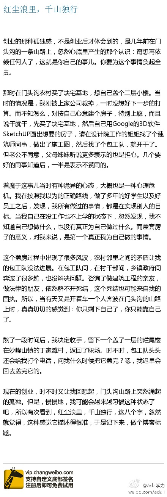

红尘浪里，千山独行 - 李力(Ada Li)的博客 ： 熬了一段时间后，我决定收手，留下一个盖了一层的烂尾楼在妙峰山镇的丁家滩村，返回了职场。时不时，包工队头头还会给我打个电话，问我什么时候把它盖完？嗯，我迟早会回去盖完它的。 网页链接
因为备案关系，隔了几个月，把搭建过程重做了一遍，采用了阿里云提供的全套Wordpress镜像文件。老天，访问慢得要死，解决了google fonts, javascript这些文件引用也没用。－ 这么古老的博客搭建和应用，依然会让人头疼啊。@Ada李力:刚刚完成博客站点的搭建，网页链接 买了云服务器，安装Apache, PHP, MySQL, WordPress; wordpress的博客内容导出到 www.adali.cn。感谢云计算，感谢开源软件，让搭建博客站点变成非常简单的一件事情。网页链接 
代入感 - 李力(Ada Li)的博客: 世界已和平很多年，每个人努力着，不伤害他人的前提下，把自己的日子过好，就是对民族和国家的最大贡献。再遇到现实中的道德逼，大可对TA说一句：滚。 网页链接 
红尘浪里，千山独行 - 李力(Ada Li)的博客 ： 熬了一段时间后，我决定收手，留下一个盖了一层的烂尾楼在妙峰山镇的丁家滩村，返回了职场。时不时，包工队头头还会给我打个电话，问我什么时候把它盖完？嗯，我迟早会回去盖完它的。 网页链接 
设计师最讨厌的情况可能是老板是个土鳖，再时尚的设计到了老板那里也会被毙掉。我现在看设计师的稿件时，也有焦虑，我的审美未必是用户喜欢的。我喜欢国外网站更多采用的简洁风格，而国内仍有很多用户喜欢堆砌很多内容的首页，比如淘宝和新浪首页。
有这种说法，从心理角度说国内外用户的区别：国外的简单首页是为了给用户自己探索留下空间，而国内用户喜欢大量信息和图片的页面，因为习惯了填鸭式教育，最好是把所有东西一股脑都放在眼前。@Ada李力:设计师最讨厌的情况可能是老板是个土鳖，再时尚的设计到了老板那里也会被毙掉。我现在看设计师的稿件时，也有焦虑，我的审美未必是用户喜欢的。我喜欢国外网站更多采用的简洁风格，而国内仍有很多用户喜欢堆砌很多内容的首页，比如淘宝和新浪首页。
昨天跟创业者聊天说到营销这个事情。我觉得至少在以互联网为基础的创业公司里，营销一定是要自己做的，即使花钱请外面的公司来做，更多是执行层面，是你告诉这些营销公司你要找什么类型用户，你要达到什么样的效果，你还要知道怎么去评估营销公司的工作。希望让营销公司指导你怎么做，是本末倒置。
类似实体店铺的商品陈列，摆得整整齐齐的，留下充分空间是一种方式，摆得拥挤不堪，人在里面转身都难，也是一种方式。貌似后者更受消费者欢迎，因为这种摆放给人一种暗示：品种多，便宜。－ 而后者不正是大多数用户的诉求吗？@Ada李力:设计师最讨厌的情况可能是老板是个土鳖，再时尚的设计到了老板那里也会被毙掉。我现在看设计师的稿件时，也有焦虑，我的审美未必是用户喜欢的。我喜欢国外网站更多采用的简洁风格，而国内仍有很多用户喜欢堆砌很多内容的首页，比如淘宝和新浪首页。
昨晚聊天的#创业#者是做定制内衣的，说问卷反馈调查，用户选择内衣第一考虑舒适。而我的感觉是舒适绝不是选择内衣的第一诉求，而是美。但是你问用户的话，她肯定不好意思说买内衣是为了让胸显得更大更挺。－ 用户怎么说从来都是参考，真正的调查是看用户去买了什么。
有人善意地建议：@整形记 这个名字太直白了，是否用个更含蓄的？我说之前已经有人提过这个建议。我的考虑是互联网上注意力稀缺，名称和LOGO的第一眼就得让用户知道你是做什么的，含蓄的话，就需要用户思考。实际上，很多时候产品设计要点就是，不要让用户思考！
 网页链接
网页链接